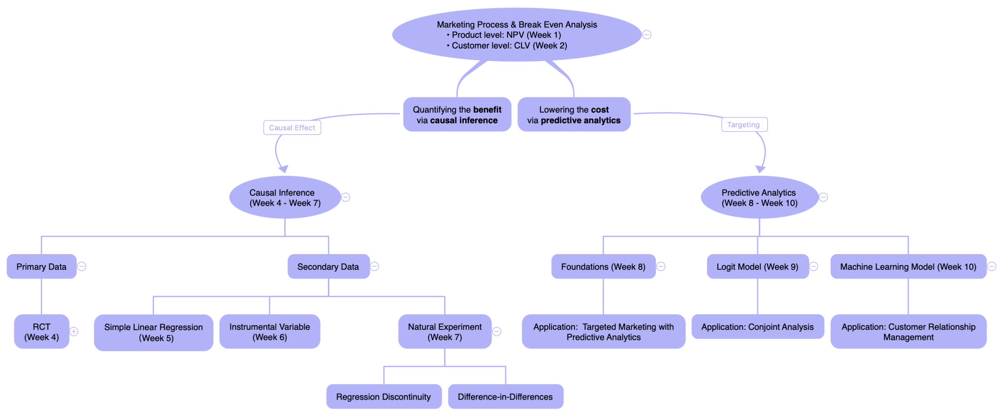

2 Syllabus: MSIN0094 Marketing Analytics
(Last update on 12 December, 2021)
2.1 Instructor Information
Module Leader:
- Wei Miao1 (wei.miao@ucl.ac.uk)
Office:
- S3, Level 38, One Canada Square
Office hours:
- Please refer to the office hour session for how to make office hour appointments during term times. More details will be confirmed in Week 1’s class.
2.2 Course Objective
Marketing analytics addresses how to utilize appropriate analytics tools to guide marketing tactics and strategies in a scientific manner. Driven by recent advances in computing power, software, and other information technologies, the very nature of marketing analytics has evolved. This module provides students with systematic and practical training in statistics, econometrics, predictive models, and programming tools in solving real-life marketing problems or any data analytics related problems.
In the first two weeks, students will start building up their business sense by learning the basic concepts of marketing and marketing process (i.e., 5C’s, STP, and 4P’s of marketing) and how to conduct break-even analysis at the company/product level (net present value) and the customer level (customer lifetime value), respectively. The remaining weeks revolve around such cost-benefit analyses and further explore marketing analytics along three dimensions: descriptive analytics (Week 3), causal inference (Week 4-7), and predictive analytics (Week 8-10).
Descriptive analytics involves using data visualization (ggplot2), statistical tests (e.g., correlation test and t-test), and database manipulation (dplyr package) to provide model-free insights into customer intelligence.
Causal inference aims at understanding the causal effect of marketing initiatives on marketing outcomes, which relates to the benefit part of the break-even analysis. Students will learn how to establish causal inference from primary data via randomized controlled trials and from secondary data via econometric analysis (instrumental variable, difference-in-differences, and regression discontinuity design).
Predictive analytics shed light on how to conduct targeted marketing by taking advantage of state-of-the-art predictive models, which relates to the cost part in the break-even analysis. Students will also learn how to apply predictive analytics tools to important marketing contexts such as conjoint analysis and customer relationship management.
At the end of the module, students will be able to carry out independent marketing research for their dissertation projects and their future jobs.
2.3 Module Structure Overview

2.4 If You Have Questions: Microsoft Teams and Office Hours
In the first class, I will provide the code to join the course’s Microsoft Teams.
It is a good practice to utilize the Microsoft Teams Q&A channels as an interactive place to promote peer-to-peer learning. For any questions, please first check the Teams channels and see if the questions are already posted and answered by any of your classmates there. If not, please post your questions in the Teams channels.
For any questions posted in the Teams channels, I will first leave for your classmates to provide answers. I will monitor and summarize the questions posted on Teams channels and clarify important ones in the subsequent week’s class.
You can also ask questions during my office hours. I am happy to answer any questions you may have about this module (well, definitely excluding assignment questions before the submission date). To make an appointment, please use this shared Excel form as in this link. The Excel form is also available in the Teams channel.
Please make sure of the following before/when you make your appointment:
- Please be careful when operating on the Excel form and kindly avoid overwriting/modifying other students’ appointments.
- Please use the “comment” function in Excel form to briefly describe the questions you have so that other students sharing similar questions can drop in as well.
- Each session lasts for 10 minutes. If you expect your questions may take a longer time to solve, you can book two consecutive sessions. Each student is entitled to at most two sessions per week to ensure equal opportunities for all students.
2.5 Textbook
We will not rely on any specific textbook in this module. All classes will be based on the lecture notes and supplementary readings I have prepared for you. However, if you would like to further enrich your learning journey and extend your knowledge of marketing analytics, I recommend “Handbook of Marketing Analytics”. This book is free for download at UCL’s E-library.
2.6 Programming Language R
We will use an open-source programming language R throughout the module. R is one of the most commonly used programming languages by data scientists, economists, and statisticians, and is sometimes called the “golden child” of data science. R is cross-platform compatible on Windows, Mac, and Linux, with thousands of packages ready for use. Undoubtedly, it has one of the richest ecosystems to perform data analytics tasks. More importantly, it is free of charge compared with other commercial software (it is good to start developing cost-benefit concepts now as you are now business school students. And we will learn more on cost-benefit analysis in the module later on)!
The teaching of R will consist of the following part:
- In the induction week, Yongdong and I will provide a tutorial on introduction to R, which covers R basics.
- In the remaining weeks, there will be R tutorials specific to each class’s topic.
If you have little prior exposure to R, it is highly recommended that you should read this tutorial, “Introduction to R”.
During (and even after) this module, whenever your run into any problems with R, Google (especially Stack Overflow) is always your best place to seek answers for most debugging issues; if you have any specific tasks in mind, the R Task Views page provides comprehensive guidance of which packages on CRAN are relevant for tasks related to a certain topic.
2.7 Classroom Etiquette
Punctuality. Classes will start on time. Please be on time.
Class participation. Please keep your mobile phones and laptops muted at all times unless otherwise instructed. (It’s good that we no longer need to attend the University of Zoom this year! Crazy things like these do happen! :D)
2.8 Assignments and Grading policy
There will be no exams in this module. Learning outcomes will be examined through three individual assignments. Your final grade in this module will be a weighted average of the following:
- First assignment, 30% weight, 1500 words
- Second assignment, 40% weight, 2000 words
- Third assignment, 30% weight, 1500 words
Detailed assignment descriptions will be given in due course.
2.8.1 Code of Conduct and Plagiarism
You will receive training in Student Academic Misconduct Procedure in the induction week, in which you will learn how to properly reference your work and avoid plagiarism. As all assignments in this module are individual assignments, you should NOT work with other students in any way.
Note that it will be a severe violation of academic integrity if you look for solutions on the Internet or even outsource the assignments to any agency. You may risk failing this module if such a violation is found and investigated by the University.
2.8.2 Word Count
Please note, according to UCL’s policy, you should follow the word limit. Otherwise, your marks may be reduced. Therefore, try to keep your answer concise and to the point.
2.8.3 For Extenuating Circumstances and Emergencies
Please double check (or even triple check) whether the file to be uploaded is the correct, finalized answer sheet before submission. The final marks will be ONLY based on the file you submit, even though you may be able to show evidence that a wrong file is uploaded. Neither I nor the TAs are authorized to handle ECs or any emergencies related to assignment submission. If anything, please contact the MSc program admin here for assistance.
2.8.4 Marks and Feedback
Your marks and feedback for each assignment will be usually released no later than 4 weeks after the submission date. Each assignment will be carefully marked according to the mark scheme by our teaching assistants, and there will be adequate second-marking procedures in the marking process to ensure the marking quality, as required by UCL. As a result, it is the university policy that students shouldn’t question the academic judgment of markers, and please refrain from emailing teaching assistants for any re-marking.
2.9 Copyright Issues
All of the materials in this module are copyrighted, either purchased by UCL or written by me. Please refrain from uploading any materials in the module to other external websites or sharing any materials with anyone unauthorized. A copyright violation may be investigated by the school.
Wei is pronounced as “way”, which stands for jade in Mandarin; Miao is my family name, which is exactly pronounced as “meow”, the sound of a kitty.↩︎